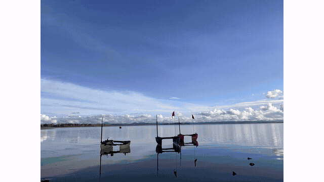
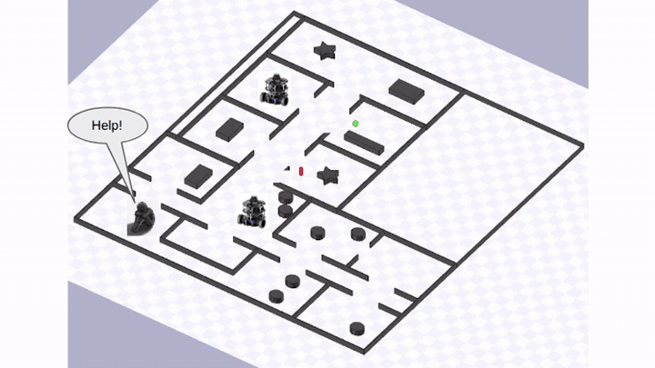
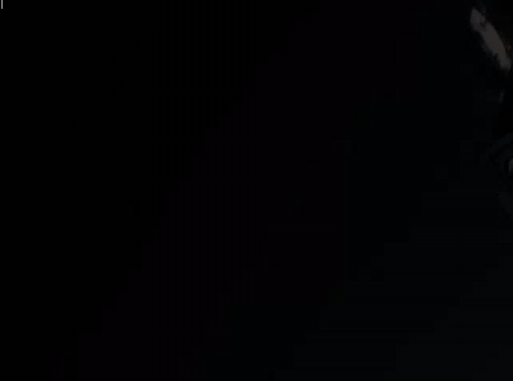
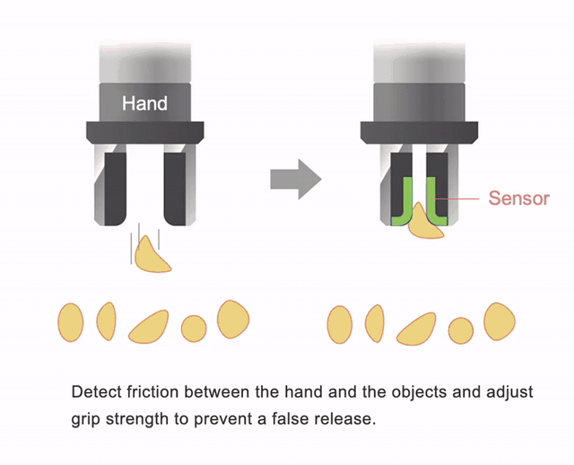
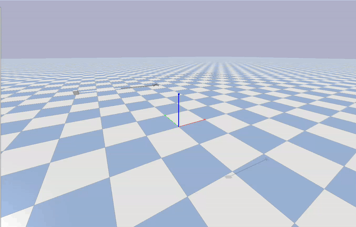

Selected Projects
Research, coursework and personal projects.

Multi-Robot Coverage Planning
Implemented a team-orienteering coverage planner with uncertain rewards in ROS 2 for coordinated depth search and contour tracking using sonar and acoustic communication. Built a high-fidelity Fern Ridge Lake environment in Unreal Engine for HoloOcean, simulated up to 50 uncrewed surface vessels, and ran field tests on the real lake with three BlueBoat robots.

Multi-Robot Search Path Planning with ROS 2 Nav2
Implemented a MILP-based multi-robot search planner to coordinate robots in capturing moving targets, and integrated it with Nav2 for waypoint navigation in Stage and RViz. Reduced average target capture time by 49% (140 s to 72 s) compared to exhaustive search across three environments.

Auction-Based Multi-Robot Task Allocation and Path Planning
Implemented a dynamic auction-based task allocation algorithm for multi-robot coordination, using RRT, RRT*, RRT-Connect, and RRT*-Connect for collision-free planning and cost-based task assignment. Evaluated with up to 5 robots and 9 dynamic tasks, comparing task completion time and path costs.

Friction-Aware Reinforcement Learning for Pick-and-Place Robots
Trained Truncated Quantile Critics (TQC) policies for pick-and-place with a simulated Franka Panda robot, comparing friction-aware state inputs, joint-level control, and curriculum learning. Curriculum learning improved low-friction grasping success by up to 20 percentage points with only 8% additional training.

Quadcopter Load Suspension
Modeled a Crazyflie quadrotor with a cable-suspended payload in PyBullet, then developed and tuned a cascaded PID controller to reduce payload oscillations. Compared against an uncontrolled baseline, the controller reduced positional drift and improved flight stability.